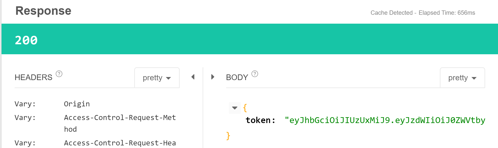

Connecting Spring Security and Spring Boot with JWT
1. Introduction to JWT
Basic authentication
As part of basic authentication, what we send is a basic 64 encoded username and password. The important thing about basic authentication is there is no expiration time. And the other thing is basic authentication token doesn’t have any user details on them and any authorization details on them, it’s pure user id and password. In summarize,
- Basic authentication
- no expiration time
- no user detail
Custom Token System
There were a number of attemps to extend and create custom token based authentication systems. It has the following features,
- Custom token system
- both teams should understand
- custom structure
- possible security flaws.
The final output of these custom token based authentication systems is that it’s some kind of a hashed value, some tokenized value. Typically these tokens contain the user details, the user authorizations and any other details which the systems are talking to each other might need.
The problem with the custom authentication systems is the custom structure, and because of it there might be security flaws.
JWT
So what happened was we wanted a common token standard which is called JWT, Jott. It continas features like
- JWT
- standard
- contain user details and authorizations
The awesome thing about JWT is that it can contian user authorizations and a number of other details. There is a standard by which it is defined, and there is a part where you can extend and add custom information.
Next let’s see what’s in JWT?
The Jott contians a HEADER, a PAYLOAD and a VERIFY SIGNATURE.
- HEADER, define what algorithm you are using for the hashing, and a type (JWT).
- PAYLOAD, contains predefined elements, most of them are not mandentory, you might add what are the authorizations that a specific user has. For example,
- sub: the subject who are we talking about
- name: the name of the person
- admin: if the user is admin
- iat: creation time of the token
- VERIFY SIGNATURE, contains the base 64 encoded paylaod. And also one of the most important part of it is your-512-bit-secret. This is kind of what secret string is provided in the JWT.
Our Next Steps
What we would do next is when user logs in with a user ID and password, we would send a request to the server and we would get JWT token back, and for all the subsequent requests we would using JWT token and we will be positioning it as part of the header. There would be an expiration time also on the Jott tokens and when the expiration data is coming near, you have to send the request to something called refresh token request.
2. Importing JWT Framework
Need to remove the previous codes related to basic auth out of the package where class TodoListApplication locates. Since these tags can only be applied to one specific class @EnableWebSecurity.
See this post to know more details about Componet Scan in Spring.
3. Executing JWT Resources - Get Token and Refresh Token
Get Token
To get the token, visiting POST http://localhost:8080/authenticate and in the body adding username and password. The request is shown as follows.
- The URL to get the token is set in
application.properties.
jwt.signing.key.secret=mySecret
jwt.get.token.uri=/authenticate
jwt.refresh.token.uri=/refresh
jwt.http.request.header=Authorization
jwt.token.expiration.in.seconds=604800- The
usernameandpasswordin Request body is set in classJwtInMemoryUserDetailsService.
CLICK
@Service
public class JwtInMemoryUserDetailsService implements UserDetailsService {
static List<JwtUserDetails> inMemoryUserList = new ArrayList<>();
static {
inMemoryUserList.add(new JwtUserDetails(1L, "teemo",
"$2a$10$3zHzb.Npv1hfZbLEU5qsdOju/tk2je6W6PnNnY.c1ujWPcZh4PL6e", "ROLE_USER_2"));
}
@Override
public UserDetails loadUserByUsername(String username) throws UsernameNotFoundException {
Optional<JwtUserDetails> findFirst = inMemoryUserList.stream()
.filter(user -> user.getUsername().equals(username)).findFirst();
if (!findFirst.isPresent()) {
throw new UsernameNotFoundException(String.format("USER_NOT_FOUND '%s'.", username));
}
return findFirst.get();
}
}Then we can get the response as follows.

Use that token when sending other requests
When sending request, we add Authentication in the HEADERS like this.
Refresh Token
The URL to refresh the token is also defined in application.properties shown above. The request and response are shown as follows.

4. Understanding JWT Spring Security Framework Setup
JwtTokenUtil.java: processing the token, e.g. creating tokens, getting detials out of the token; also taking care of all the expiration date and that kind of stuff.Files related to JWT Resources Implementation:
AuthenticationException,JwtAuthenticationRestController,JwtTokenRequest,JwtTokenResponse.Files related to User Details includes
JwtInMemoryUserDetailsService,JwtUserDetails.class
JWTWebSecurityConfigextendsWebSecurityConfigurerAdapterConfigures, where we set http configuresuserDetailsService with BCryptPasswordEncoder
statelessness! That is we don’t want any session created on the server.
AuthenticationEntryPoint, which is all about handling an anthenticated users. If the user is not authenticated what should send back in our response.
JwtTokenAuthorizationOncePerRequestFilter
/h2-console, h2 is an in memory database, which we would be using hash to control to look at the data in the database. So we would want to ensure the URL
/h2-consoleis not secure.The code in this part is shown as follows.
JWTWebSecurityConfig
public class JWTWebSecurityConfig extends WebSecurityConfigurerAdapter {
@Autowired
private JwtUnAuthorizedResponseAuthenticationEntryPoint jwtUnAuthorizedResponseAuthenticationEntryPoint;
@Autowired
private UserDetailsService jwtInMemoryUserDetailsService;
@Autowired
private JwtTokenAuthorizationOncePerRequestFilter jwtAuthenticationTokenFilter;
@Value("${jwt.get.token.uri}")
private String authenticationPath;
@Autowired
public void configureGlobal(AuthenticationManagerBuilder auth) throws Exception {
auth
.userDetailsService(jwtInMemoryUserDetailsService)
.passwordEncoder(passwordEncoderBean());
}
@Bean
public PasswordEncoder passwordEncoderBean() {
return new BCryptPasswordEncoder();
}
@Bean
@Override
public AuthenticationManager authenticationManagerBean() throws Exception {
return super.authenticationManagerBean();
}
@Override
protected void configure(HttpSecurity httpSecurity) throws Exception {
httpSecurity
.csrf().disable()
.exceptionHandling().authenticationEntryPoint(jwtUnAuthorizedResponseAuthenticationEntryPoint).and()
.sessionManagement().sessionCreationPolicy(SessionCreationPolicy.STATELESS).and()
.authorizeRequests()
.anyRequest().authenticated();
httpSecurity
.addFilterBefore(jwtAuthenticationTokenFilter, UsernamePasswordAuthenticationFilter.class);
httpSecurity
.headers()
.frameOptions().sameOrigin() //H2 Console Needs this setting
.cacheControl(); //disable caching
}
@Override
public void configure(WebSecurity webSecurity) throws Exception {
webSecurity
.ignoring()
.antMatchers(
HttpMethod.POST,
authenticationPath
)
.antMatchers(HttpMethod.OPTIONS, "/**")
.and()
.ignoring()
.antMatchers(
HttpMethod.GET,
"/" //Other Stuff You want to Ignore
)
.and()
.ignoring()
.antMatchers("/h2-console/**/**");//Should not be in Production!
}
}5. Creating a New User with Encoded Password
We use BCryptPasswordEncoder generating password. For example,
BCryptPasswordEncoder encoder = new BCryptPasswordEncoder();
for (int i = 1; i <= 10; i++) {
String encodedString = encoder.encode("qwer");
System.out.println(encodedString);
}6. Using JWT Token in Angular Frontend
- In
basic-authentication.service.ts, create a new method to generate JWT authentication.
executeJWTAuthenticationService(username, password) {
return this.http.post<any>(
`${API_URL}/authenticate`, {
username,
password
}).pipe(
map(
data => {
sessionStorage.setItem(AUTHENTICATED_USER, username);
sessionStorage.setItem(TOKEN, `Bearer ${data.token}`);
return data;
}
)
);
}- In
login.component.ts, create a new methodhandleJWTAuthLogin()binding with the Login button. That is,
<button class="btn btn-success" (click)=handleJWTAuthLogin()>Login</button>handleJWTAuthLogin() {
this.basicAuthenticationService
.executeJWTAuthenticationService(this.username, this.password)
.subscribe(
data => {
console.log(data);
this.router.navigate(['welcome', this.username])
this.invalidLogin = false;
},
error => {
console.log(error)
this.invalidLogin = true;
}
)
}